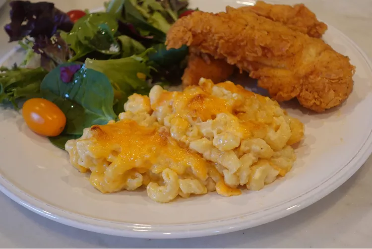

Creamiest Mac and Cheese
Home

What is Creamiest Mac and Cheese
Boxed or frozen mac and cheese dishes don't even begin to compare to this comforting, from-scratch version that's easy,
affordable, and ultra-creamy! Cheddar and cream cheese add a sharp and slightly tangy flavor to the rich sauce which coats
perfectly cooked pasta. It's a great base recipe that can be tweaked to your taste by switching up the cheeses or adding
some cooked veggies. Serve as a meatless main course with a green salad or as a side dish with roasted or grilled meats.
Ingredients:
- cooking spray
- 1 (16 ounce) package elbow macaroni
- 4 teaspoons kosher salt, divided
- 2 (8 ounce) packages sharp Cheddar cheese
- 6 tablespoons butter
- ⅓ cup all-purpose flour
- ¼ teaspoon ground mustard
- 3 ½ cups whole milk, or more to taste
- 3 ounces cream cheese, softened
- ½ teaspoon ground black pepper
- ⅛ teaspoon cayenne pepper (Optional)
- Preheat the oven to 350 degrees F (175 degrees C). Spray a 9x13-inch baking dish with cooking spray.
- Bring a large pot of water to a boil. Add macaroni and 2 ½ teaspoons salt and cook, stirring frequently, for 5 to 6 minutes. Drain and set aside.
- Shred Cheddar cheese by hand or in a food processor; set aside.
- Melt butter in a large saucepan over medium heat. Whisk in flour and cook, whisking constantly, until smooth, 3 to 4 minutes. Whisk in mustard powder,
then 3 ½ cups milk. Whisk occasionally until mixture comes to a simmer, then let simmer for 5 minutes.
- Add cream cheese and cook, stirring often, until thick, creamy, and smooth, about 5 minutes. Add remaining 1 ½ teaspoon salt, pepper, and cayenne.
- Stir in 2 cups shredded Cheddar. Turn off the heat and let cheese melt. Stir in cooked macaroni. Add up to ¼ cup milk if you feel like the mixture is too thick.
- Layer ½ of the pasta mixture in the bottom of the prepared baking dish. Top with 1 ½ cups Cheddar. Spread remaining pasta mixture over top and sprinkle with remaining Cheddar.
- Bake in the preheated oven until golden and bubbly, 25 to 30 minutes.